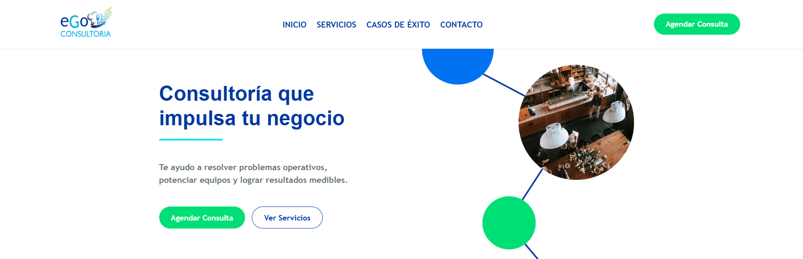

Software Engineer / Web Developer
Desarrollo productos digitales claros, funcionales y bien pensados, con atención al detalle y foco en resolver necesidades reales.
Soy desarrolladora web con formación en ingeniería. Me gusta construir interfaces claras, eficientes y que brinden una buena experiencia de usuario.
Vengo del mundo del desarrollo de software empresarial, donde aprendí la importancia de la estructura, el análisis y la calidad del código.
Hoy aplico esa experiencia para crear productos web funcionales y estéticamente cuidados.
Una combinación de experiencia en desarrollo empresarial y tecnologías web modernas.
Una selección de trabajos recientes que muestran mi enfoque en desarrollo web y solución de problemas
Si buscás un sitio web claro, funcional y hecho con cuidado, escribime.
Me gusta trabajar con objetivos concretos y un proceso
ordenado.